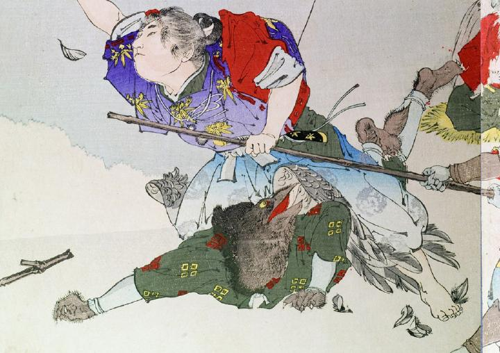

牛若丸に組み伏せられた烏天狗。腹這いになり、背に牛若丸が跨っている。烏天狗は黒い羽毛に覆われ、手足と嘴も同様に黒い。深緑色の着物と白い手甲と脚絆を身につけている。
著作者：秀湖／出典：親書誌：U426_nichibunken_0144：御曹子牛若丸鞍馬ニ劍法ヲ修ス；オンゾウシウシワカマルクラマニケンポウヲシュウス／日付：2009／資源識別子：U426_nichibunken_0144_0001_0002
Copyright (c)2010- International Research Center for Japanese Studies, Kyoto, Japan. All rights reserved.